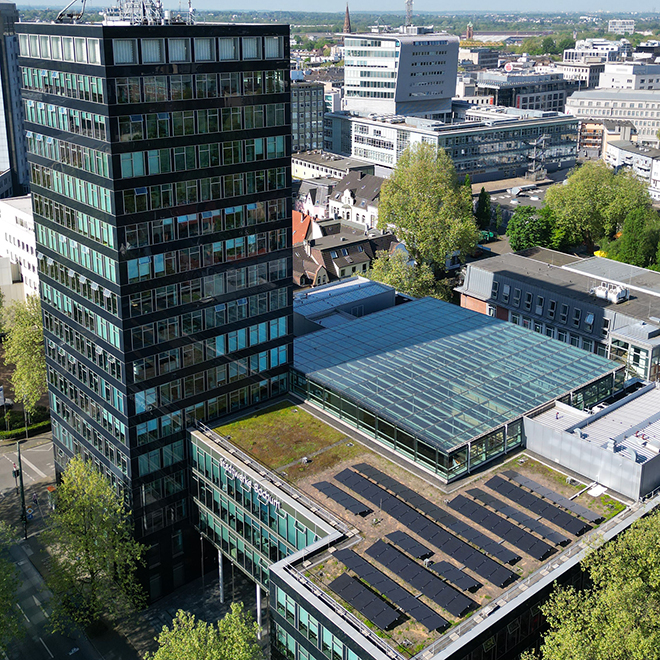
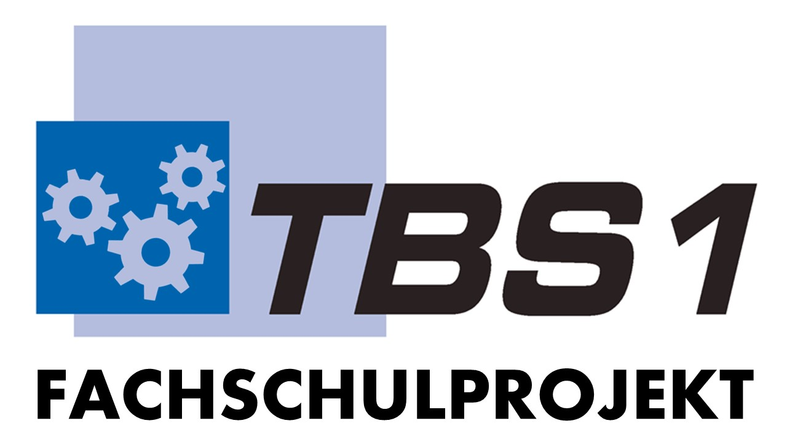

Zusammenarbeit mit Stadtwerke Bochum Netz
Die Stadtwerke Bochum Netz GmbH ist Projektpartner und stellt den Praxisbezug zur Trinkwasserdruckregelanlage Neuer Kamp her. Die Aufgabenstellung wurde in Abstimmung mit dem Unternehmen entwickelt.
Die Projektgruppe analysiert die Anlage und erarbeitet ein Konzept zur Nutzung der vorhandenen Druckenergie.

Verwaltungsgebäude der Stadtwerke Bochum am Ostring (Foto aus der Projektdokumentation).
Unsere Schule
Die Projektarbeit ist Bestandteil der Weiterbildung zum staatlich geprüften Techniker, Fachrichtung Maschinenbautechnik, an der Technischen Beruflichen Schule 1 (TBS1) in Bochum.
